Demos for paper submitted to IEEE Access: A Novel Speech Denoising Method Incorporating Bayesian NMF with Deep Neural Network
*Weili Zhou, Mingliang Lu, Zhen Zhu
E-mail: willychow@qq.com, *Weili Zhou
Section 1: More enhanced speech samples based on proposed method and the SOTA SEGAN algorithm
Section 2: Related waveforms refered in the submitted paper
Section 1: More enhanced speech samples based on proposed method and the SOTA SEGAN algorithm
Selected results on some unseen noise types at the common SNRs (10dB, 5dB):
Airport, SNR10 Airport, SNR5 Car, SNR10 Car, SNR5 Train, SNR10 Train, SNR5 Restaurant, SNR10 Restaurant, SNR5
Testing on the unseen noise type: Pink at different SNRs below:
SNR20 SNR15 SNR10 SNR5 SNR0
Testing on the unseen noise type: F16 at different SNRs below:
SNR20 SNR15 SNR10 SNR5 SNR0
Section 2: Related waveforms refered in the submitted paper
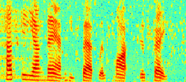 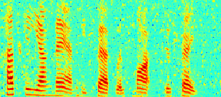 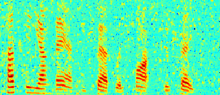 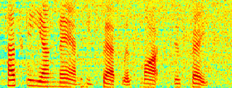
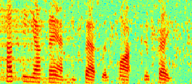 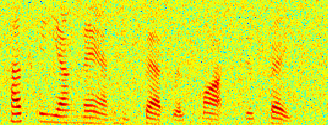 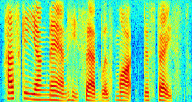
Performance comparision of different proposed methods: Spectrograms of an utterance tested with white noise at SNR= 5dB. (a)proposed method (PESQ=2.28), (b) segan (PESQ=2.23), (c) DNN-IRM (PESQ=2.11), (d) DNN-NMF (PESQ=2.17), (e)OL-BNMF (PESQ=2.15)£¬(f)noisy speech (PESQ=1.72), (g) clean speech (PESQ=4.5).
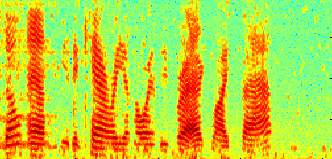 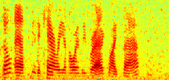 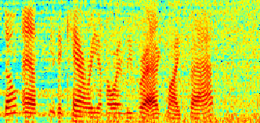 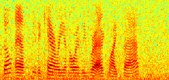
Indication of the ability of suppression against non-stationary noise : Spectrograms of an utterance tested on Pink (unseen) noise at SNR= 5dB: with (a) proposed method (PESQ=2.47), (b) segan enhanced (PESQ=2.32), (c) DNN-NMF (PESQ=2.14), and (d) noisy speech (PESQ=1.85).
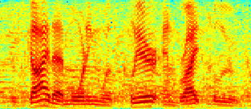 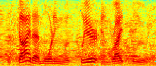 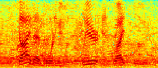 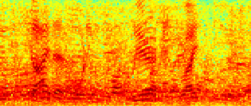
Indication of the ability of enhancing the real-world noisy utterance : Spectrograms of a noisy speech extracted from the Babble noise with: (a)proposed, (b)segan, (c)DNN-NMF, and (d)noisy speech